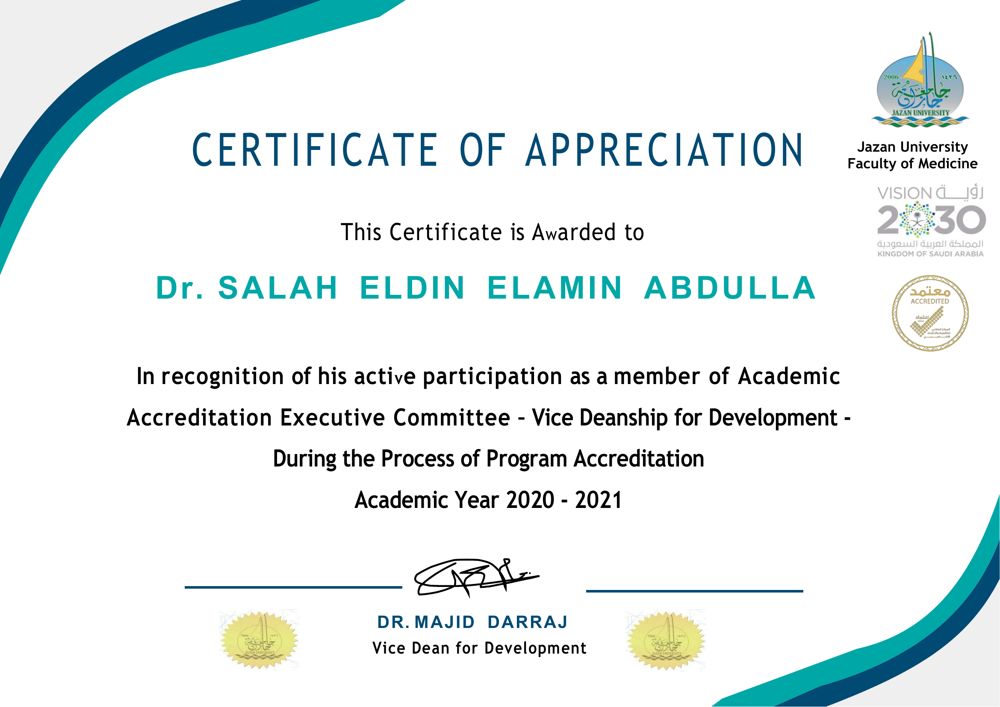
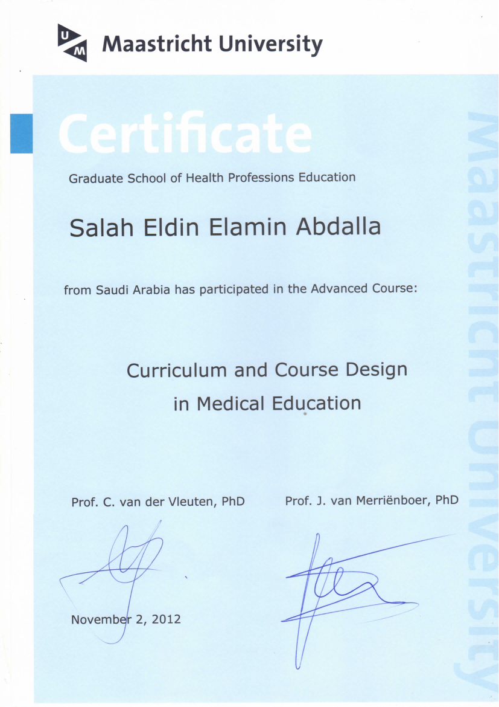
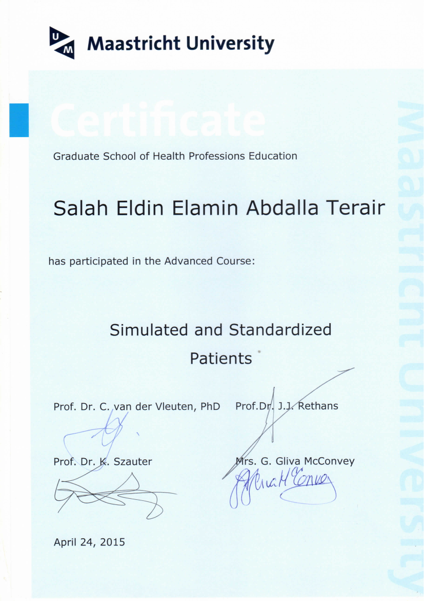
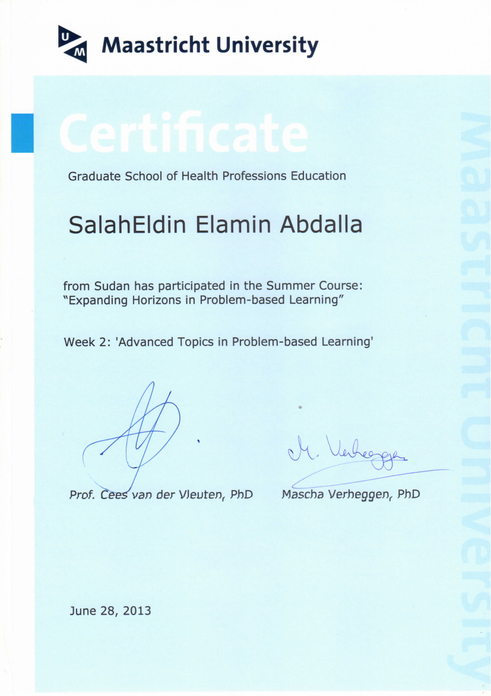

Designing how medicine gets taught, assessed, and accredited.
Salaheldin Elamin Abdalla Terair, MBBS, MSc, MHPE — over 20 years building curricula, assessment systems, and digital learning tools across undergraduate and postgraduate medical education.
About
Health Professions Educator with over 20 years of experience in undergraduate and postgraduate medical and health professions education. Expertise spans curriculum design, competency-based education, student assessment, blueprinting, psychometric analysis, program evaluation, accreditation, and faculty development.
Experienced in teaching and coordinating postgraduate Health Professions Education programs, and in developing program specifications, curriculum documentation, and academic proposals for accreditation by higher education authorities.
Proficient in digital learning design and generative AI applications in education, building interactive HTML/JavaScript study tools, SCORM packages, and question banks used directly by students and faculty.
Areas of Expertise
Educational Apps & Digital Projects
Interactive learning tools built for undergraduate and postgraduate medical students — replace the placeholder cards below with your live projects.
EasyMedLearn.com
Free resource hub for health professions educators — curriculum design and assessment guidance.
Visit site →EasyLearn — Main Portal
Central site for courses, interactive assessments, and program content.
Visit site →Mock Exam — Thorax, Abdomen, Pelvis, Embryology & Histology
A consolidated mock exam with modern UI and immediate feedback.
Open live app →Test Your Understanding — Anatomy & Histology
Short, focused checks for understanding with explanations.
Open live app →Clinical Anatomy
Interactive assessment with clinical correlation across abdomen, pelvis, and thorax.
Open live app →Professional Experience
Lecturer, Human Anatomy
- Teach human anatomy to undergraduate MBBS students; design learning resources.
- Develop digital and interactive study materials for self-directed learning.
Program Coordinator & Postgraduate Lecturer, HPE
- Lead development and review of Master program specifications and accreditation documentation.
- Coordinate postgraduate program delivery, assessment, and quality assurance.
- Teach postgraduate modules and design program-level learning outcomes.
Senior Lecturer — Medical Education & Ultrasound Imaging
- Directed assessment reform: blueprinting, standard-setting, psychometric analysis, question banking.
- Head, Student Assessment Committee (2013–2014) and Head, Program Evaluation Unit (2015–2018).
- Member, Academic Accreditation Executive Committee — Vice Deanship for Development (2020–2021), supporting the Faculty of Medicine through its program accreditation process.
- Designed and delivered 100+ faculty development workshops; Outstanding Facilitator, CPD (2012–2013).
- Taught Professionalism & Bioethics, Radiology, and Ultrasound Technique.
Medical Licensing Examinations Manager / Vice Head, Examination Department
- Managed national medical licensing examination processes, including CBT systems and question banking.
- Pioneered the computer-based examination system at the Sudan Medical Council.
Teaching Assistant, Human Anatomy
- Taught anatomy to undergraduate medical students; supported practical sessions and assessment.
Education & Certifications
Degrees & Fellowships
- PGP, Data Science & Business AnalyticsMcCombs School of Business, UT Austin · 2025
- Fellowship, Program Evaluation & Educational ResearchUniversity of Illinois at Chicago · 2014
- MHPE, Health Professions EducationMaastricht University & Suez Canal University · 2012
- MSc, Diagnostic Medical UltrasoundAl-Zaiem Al-Azhari University, Sudan · 2010
- MBBSCarol Davila University of Medicine and Pharmacy, Bucharest · 1996
Certificates & Advanced Training
- Generative AI for NLP — Great Learning, 2025
- Assessment of Professional Competence — Maastricht University, 2016
- Simulated & Standardized Patients — Maastricht University, 2015
- Advanced Topics in Problem-Based Learning — Maastricht University, 2013
- Curriculum & Course Design in Medical Education — Maastricht University, 2012
- New Trends in E-Learning — Jazan University & Rollins College, 2014
- SQL Server & Database Management — Aptech Computer Education, 2008
Research & Publications
- What are the Attitudes of Medical Students at Jazan University toward Professionalism? (submitted for publication)
- Evaluation of Team-based Learning as a New Instructional Method in Jazan Faculty of Medicine.
- Students' Course Evaluation: The Use of Factor Analysis in Determining Reliability and Validity of the Questionnaire Instrument.
- Variations in the Anatomy of the Human Thyroid Arteries (MSc research, University of Khartoum, 2006).
- Sonographic Evaluation of Anterior Knee Pathologies in Sudanese Population (MSc research, Al-Zaiem Al-Azhari University, 2008–2009).
Professional Affiliations
Certificates & Recognitions

Certificate of Appreciation — Academic Accreditation Executive Committee
Awarded for active participation as a member of the Academic Accreditation Executive Committee, Vice Deanship for Development, during the Faculty of Medicine's program accreditation process (AY 2020–2021).
View certificate (PDF) →
Curriculum and Course Design in Medical Education
Advanced course completed through Maastricht University's Graduate School of Health Professions Education, November 2012.
View certificate (PDF) →
Simulated and Standardized Patients
Advanced course completed through Maastricht University's Graduate School of Health Professions Education, April 2015.
View certificate (PDF) →
Advanced Topics in Problem-Based Learning
Summer course, Week 2: Expanding Horizons in Problem-based Learning — Maastricht University's Graduate School of Health Professions Education, June 2013.
View certificate (PDF) →